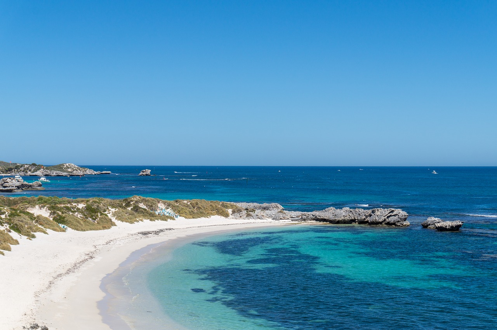
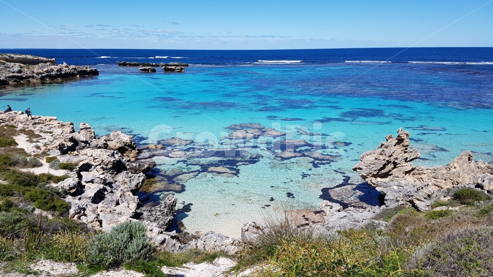

AUSTRALIA
Rottnest Island
Australia
Africa
Malaysia
Bucket list
PHOTO
ANIMAL
ENJOY
Rottnest Island
로트네스트 섬


로트네스트 아일랜드는 연안에서 18 킬로미터(11마일) 떨어져 있습니다.
63개의 해변이 있으며 수영, 다이빙, 서핑, 낚시 및 스노클링을 포함한 수상 스포츠를 즐기기에 최적의 장소입니다.
복잡한 도시의 분주함을 훌훌 털어 버리고, 맑고 고요한 물에서 수영을 즐겨도 좋습니다.
이 섬의 차 없는 지역을 돌아다니려면 자전거가 제일 좋습니다.